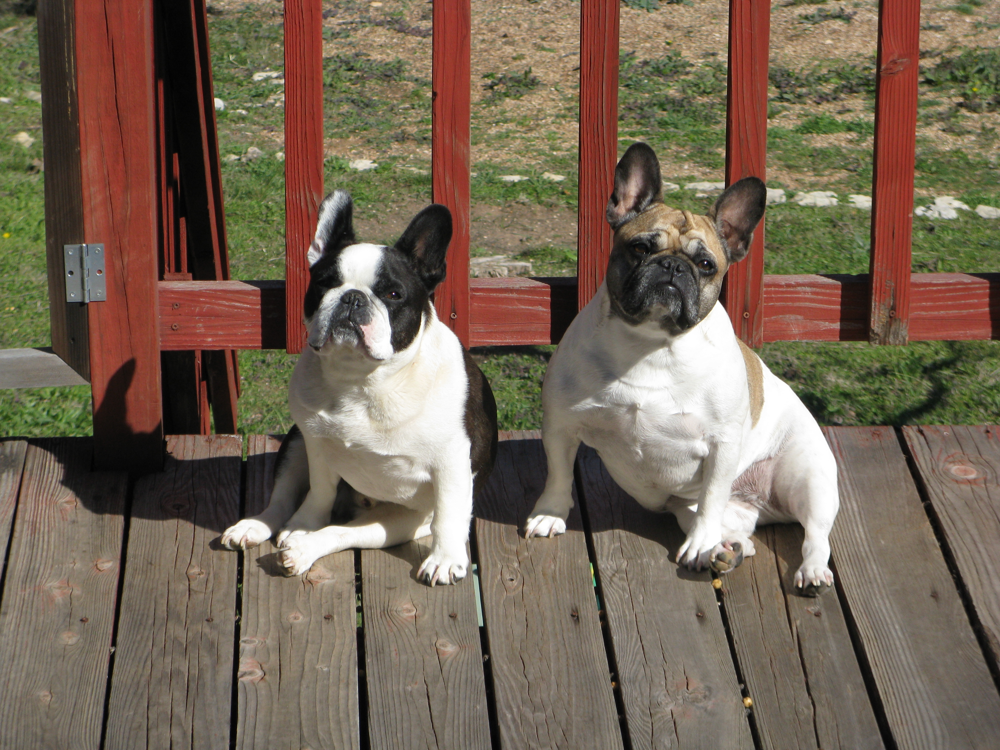

About Me
Bacon ipsum dolor amet burgdoggen tri-tip swine, doner jerky jowl landjaeger pork belly spare ribs cow kevin. Ham andouille shankle pig turkey meatball biltong. Cupim ham hock shankle capicola chuck tri-tip. Short ribs ball tip meatloaf venison porchetta. Short loin doner sausage, kevin bacon shankle tail andouille picanha salami landjaeger. Jerky tri-tip beef ribs, tail short loin drumstick filet mignon salami tenderloin. Tail meatloaf tenderloin flank, salami cupim strip steak picanha corned beef turducken ham hock.
Flank corned beef hamburger sausage ribeye ham hock cupim shankle tail fatback turkey. Picanha short ribs prosciutto, venison pancetta turkey chuck meatball spare ribs brisket boudin. Meatloaf tenderloin fatback swine bresaola picanha. Short ribs prosciutto picanha tail capicola ground round kielbasa pig. Spare ribs venison tri-tip drumstick ball tip cupim beef rump shankle sirloin ham ham hock.
Chicken ball tip landjaeger, fatback pastrami salami ham pork loin ground round. Tri-tip swine andouille fatback. Picanha drumstick kielbasa, pig sirloin capicola shankle bresaola tongue pastrami fatback pork loin filet mignon. Pork chop beef ribs pastrami, doner turkey sirloin burgdoggen frankfurter. Prosciutto beef ribs landjaeger frankfurter salami turkey. Chuck meatball short ribs ground round jerky. Pork chop cupim beef, t-bone turkey pork ground round pastrami ball tip capicola.